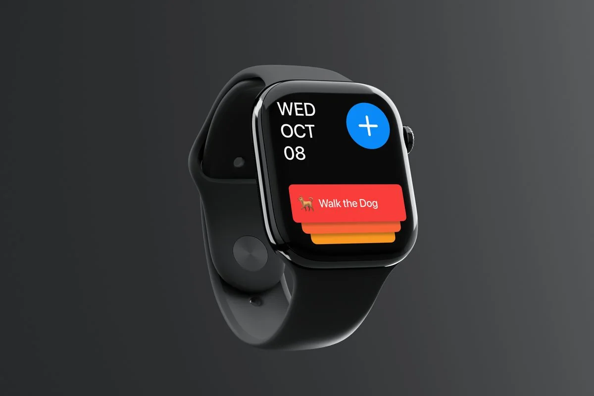

Captr
Your day, at a glance.
- Type
- Apple Watch app
- Status
- Concept
- Tools
- Figma
- Made at
- Ulster University
Overview
A daily to-do companion for the wrist. Capture tasks as you go, wake up to a prioritised list, reorder it in seconds, and tick things off. If something doesn’t get done, push it to tomorrow. No friction.
Quick capture
Add a task any time. No categories, no setup. Just text and an optional date. Sort it later.
Daily list
Every morning, tasks tagged for today appear as a checklist. Your day, assembled while you slept.
Reorder
Drag tasks to set your priority. The order changes and the colours do the rest.
Tick off
Swipe to complete, with haptic feedback and a check animation. Small wins should feel good.
Priority through colour.
The sunset gradient does the thinking for you. Red is urgent. It shifts through orange and yellow as priority drops. In about three seconds on a watch face, you know where to start. Circular buttons are the ones you press; rectangular cards are the ones you swipe. The shapes tell you what to do.
- Most urgent, do it now
- High priority, today
- Medium, later today
- Low priority, if time allows
Next project
Personal projectIn beta
Brain Dump
Type or talk, and it sorts the lot into tasks, routines, ideas and projects.